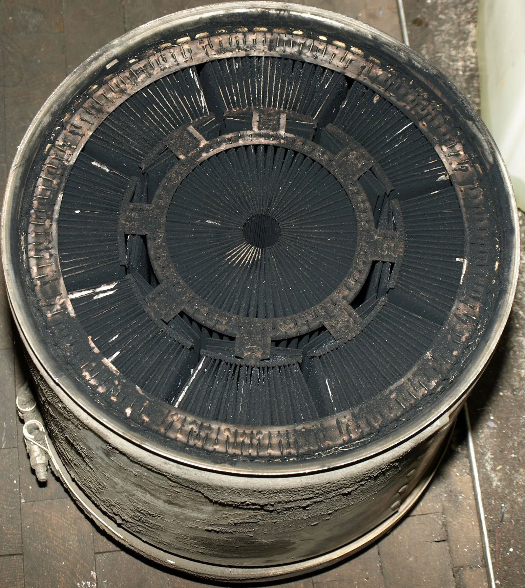
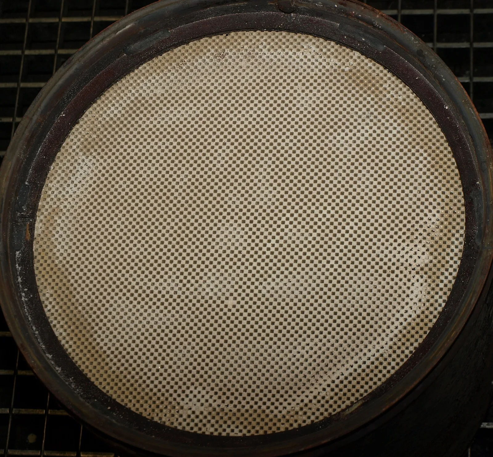
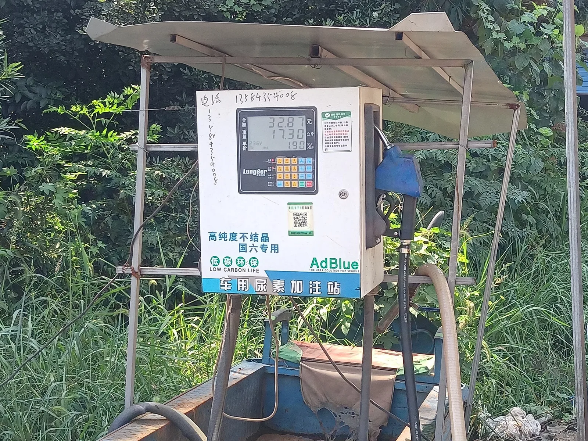
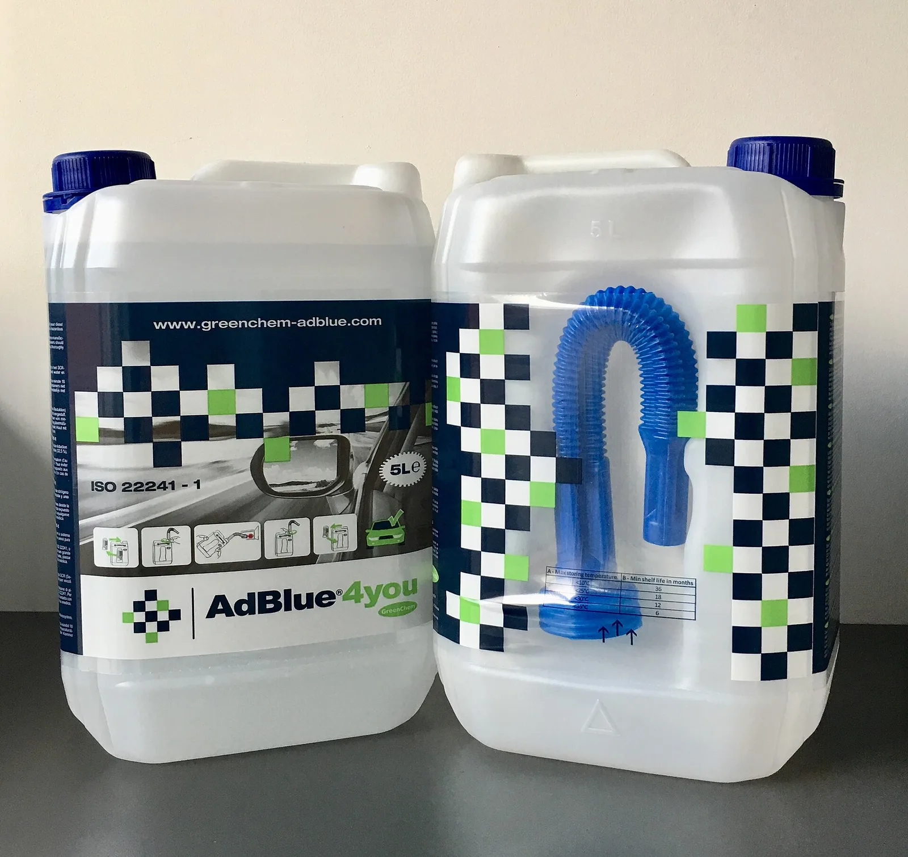
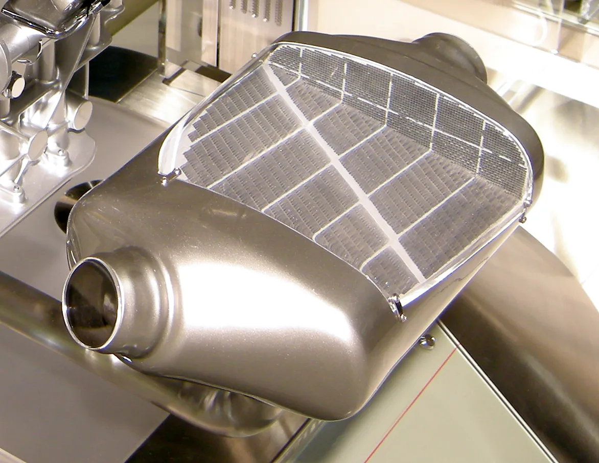

▲ 매연이 쌓인 DPF. 이 상태로는 배기가 원활히 빠져나가지 못한다
디젤차 정비에서 가장 비싼 오해는 이겁니다.
"DPF 경고등이 뜨면 DPF를 갈아야 한다."
대부분은 갈 필요가 없습니다. 그리고 많은 운전자가 요소수를 DPF용이라고 알고 있는데, 둘은 아예 다른 장치입니다.
1. DPF가 하는 일, 그리고 막히는 이유
DPF는 Diesel Particulate Filter, 우리말로 매연 저감장치입니다. 배기가스가 지나가는 통로에 벌집 모양의 세라믹 필터를 넣어 매연 입자를 걸러냅니다.

▲ 세척된 DPF의 벌집 구조. 칸이 번갈아 막혀 있어 배기가스가 벽을 통과하며 매연을 남긴다 ⓒ Wikimedia Commons
구조를 보면 원리가 바로 보입니다. 벌집의 칸이 번갈아 막혀 있습니다. 배기가스는 들어간 칸의 끝이 막혀 있으니 옆 칸으로 벽을 뚫고 나가야 합니다. 이때 가스만 빠져나가고 매연 입자는 벽에 남습니다.
그래서 필연적으로 쌓입니다. 걸러내는 게 목적인 장치이므로 쌓이는 것 자체는 고장이 아닙니다. 문제는 쌓인 걸 제때 태우지 못할 때 생깁니다.
2. 재생에는 세 종류가 있다
쌓인 매연을 태워 없애는 과정을 '재생(Regeneration)'이라고 합니다. 개입 정도에 따라 셋으로 나뉩니다.
| 구분 | 어떻게 | 운전자가 할 일 |
|---|---|---|
| 자연재생 | 고속 주행으로 배기온도가 550~600℃까지 올라가면 매연이 스스로 탄다 | 없음 — 저절로 된다 |
| 강제재생 | ECU가 연료를 추가 분사해 배기온도를 억지로 올린다 | 차가 알아서 시작 — 중간에 끄면 안 된다 |
| 수동재생 | 정비소에서 진단기로 강제 실행 | 입고 필요 |
여기서 가장 흔한 실수가 나옵니다. 강제재생이 시작됐는데 목적지에 도착해 시동을 꺼버리는 것입니다.
강제재생 중에는 이런 신호가 나타납니다. 공회전 rpm이 평소보다 높고, 냉각팬이 크게 돌고, 배기에서 특유의 냄새가 나며, 순간연비가 눈에 띄게 나빠집니다. 이때 시동을 끄면 타다 만 매연이 그대로 남습니다. 이게 반복되면 재생이 끝내 완료되지 못하고 누적됩니다.
✅ 강제재생 신호가 보이면 — 가능하면 시속 60km 이상으로 15~20분 더 달려 재생을 끝내주세요. 도착했더라도 잠깐 더 주행하는 편이 낫습니다.
3. 클리닝이냐 교체냐 — 비용이 10배 갈린다
재생으로 해결되지 않을 만큼 쌓였다면 그때 정비소로 갑니다. 여기서 선택지가 둘로 갈리고, 금액 차이가 10배입니다.
| 구분 | 비용 | 어떤 경우 |
|---|---|---|
| 클리닝 | 20만 원 수준 | 탈거 후 세척 — 필터 자체는 살린다 |
| 교체 | 200만 원 수준 | 필터가 깨지거나 녹아붙었을 때 |
클리닝 견적에는 필터 세척 외에도 항목이 붙습니다. 가스켓과 볼트 같은 소모품, 압력·온도 센서 점검, 흡기와 EGR 청소, 진단비, 그리고 재장착 후 강제재생까지가 한 묶음입니다. 견적서를 받으면 이 항목들이 포함돼 있는지 확인하는 편이 좋습니다.
📍 클리닝 주기의 기준은 주행 패턴
도심 단거리 위주라면 1~2만km 또는 1년, 고속도로 장거리 위주라면 5~6만km 또는 3~4년이 대략의 기준입니다. 같은 연식이라도 주행 패턴에 따라 서너 배 차이가 납니다. 배기온도가 올라갈 시간이 있느냐가 사실상 전부이기 때문입니다.
4. 요소수는 DPF와 다른 장치다
여기서부터가 가장 많이 헷갈리는 부분입니다. 요소수는 DPF에 넣는 것이 아닙니다.

▲ 요소수 주입 설비. 요소수는 DPF가 아니라 SCR 장치로 들어간다 ⓒ Wikimedia Commons
디젤차의 배기 후처리는 크게 두 갈래로 나뉩니다.
| 장치 | 잡는 물질 | 방식 | 소모품 |
|---|---|---|---|
| DPF | 매연(PM) — 눈에 보이는 검은 입자 | 걸러서 태운다 | 없음 (연료로 태움) |
| SCR | 질소산화물(NOx) — 보이지 않는 기체 | 화학 반응으로 분해 | 요소수 |
SCR은 선택적 촉매 환원(Selective Catalytic Reduction)의 약자입니다. 배기가스에 요소수를 뿌리면 고온에서 암모니아가 생기고, 이 암모니아가 질소산화물과 반응해 질소와 물로 바뀝니다. 유해한 기체를 공기 성분과 물로 되돌리는 셈입니다.
그래서 요소수가 떨어지면 배출가스 기준을 못 맞춥니다. 유로6 기준을 적용받는 차들은 요소수가 바닥나면 재시동이 걸리지 않도록 설계돼 있습니다. 고장이 아니라 법규에 따른 설계입니다.
5. 요소수 경고등이 안 꺼질 때
요소수를 넣었는데 경고등이 그대로인 경우가 자주 있습니다. 대부분은 고장이 아니라 인식 절차의 문제입니다.

▲ 시판 요소수. 소량만 넣으면 센서가 변화를 인식하지 못하는 경우가 많다 ⓒ Wikimedia Commons
| 원인 | 확인·대처 | 비용 |
|---|---|---|
| 주입량 부족 | 5L 안팎으로는 센서가 인식 못 하는 차가 있다 — 넉넉히 넣는다 | 요소수 값 |
| 인식 지연 | 시동 2~3회 또는 20km 이상 주행 후 초기화된다 | 0원 |
| 결정화 | 겨울철·장기 미운행 시 굳어 수위를 잘못 읽는다 | 세척 |
| 레벨 센서 고장 | 위 셋을 해도 안 꺼지면 의심 | 20만 원 이상 |
| 인젝터 고장 | 분사 자체가 안 되는 경우 | 30만 원 이상 |
순서가 중요합니다. 경고등이 떴다고 바로 센서 교체를 받으면, 단순 주입량 부족이었을 경우 20만 원을 헛쓰게 됩니다. 충분히 넣고 20km 이상 달려본 뒤에 판단하세요.
6. 겨울에 생기는 문제 — 결정화
요소수는 물에 요소를 32.5% 녹인 수용액입니다. 그래서 영하 11도 부근에서 업니다.
정상 운행하는 차라면 큰 문제는 아닙니다. 요소수 탱크에는 히터가 들어 있어 주행 중 녹습니다. 문제는 오래 세워둔 차입니다. 얼었다 녹기를 반복하면 주입구 주변에 흰 결정이 굳어붙고, 이 상태에서 센서가 수위를 잘못 읽습니다.
✅ 겨울 요소수 관리
· 주입 후 흘린 자국은 바로 닦아냅니다 — 그대로 두면 굳습니다
· 개봉한 지 오래된 요소수는 쓰지 않습니다 — 변질되면 인젝터를 막습니다
· 직사광선을 피해 밀봉 상태로 보관합니다
· 굳은 결정은 따뜻한 물로 녹입니다 — 요소수는 물에 녹습니다

▲ DPF 본체. 주행 패턴에 따라 클리닝 주기가 서너 배까지 벌어진다 ⓒ Wikimedia Commons
7. 결국 주행 습관이 좌우한다
DPF가 빨리 막히는 차에는 공통점이 있습니다.
| 불리한 조건 | 유리한 조건 |
|---|---|
| 편도 5km 이하 단거리 반복 | 주 1회 이상 고속 주행 |
| 시동 후 금방 목적지 도착 | 배기온도가 충분히 오를 시간 |
| 공회전 위주 정체 구간 | 일정 속도 정속 주행 |
| 강제재생 중 잦은 시동 정지 | 재생을 끝까지 완료 |
즉 디젤차는 짧게 자주 타는 사람에게 불리한 구조입니다. 출퇴근 거리가 짧고 주말에도 장거리를 잘 가지 않는다면, 애초에 디젤이 맞는 선택인지부터 따져볼 만합니다.
내 차의 배출가스 관련 정보와 검사 이력은 자동차민원 대국민포털에서 확인할 수 있습니다. 자동차365 바로가기
8. 정리
DPF와 요소수는 함께 언급될 뿐 다른 장치입니다. DPF는 매연을 걸러 태우고, 요소수는 SCR에서 질소산화물을 분해합니다.
DPF 경고등이 떴다고 교체부터 떠올릴 필요는 없습니다. 대부분은 재생을 끝까지 못 한 것이고, 그다음이 20만 원대 클리닝이며, 200만 원대 교체는 필터가 물리적으로 손상됐을 때입니다.
요소수 경고등에도 순서가 있습니다. 넉넉히 넣고 20km 이상 달려본 뒤에 센서를 의심해도 늦지 않습니다.